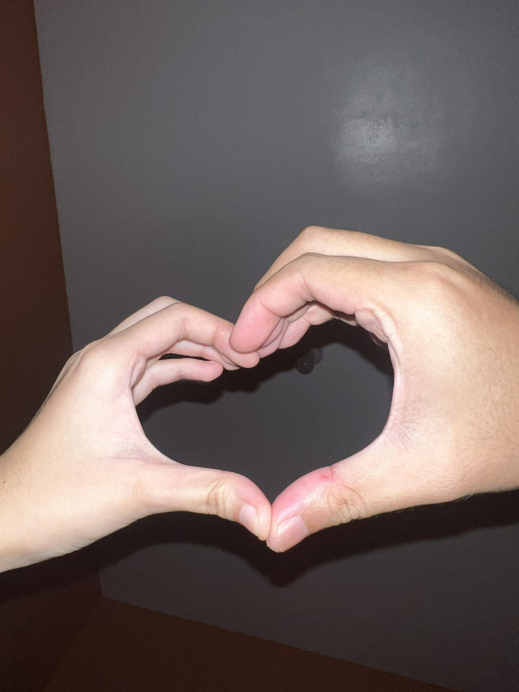

To My Dearest, Blessee
Hello, Happy Valentine's Day. Hindi tayo magkikita ngayon kaya may paganto. I hope you find this message well.
Impossible pa lang well kasi nasa school ka ngayon at uwing-uwi ka na.
Wala akong magawa ngayon at hindi ako makatulog kaya I made this site for you.
Forever 'to nandito, unless ma-delete 'yong site no'ng host website.
Dito ko na lang sasabihin lahat. Ang creative talaga ng tao kapag in love, no? Kiss muna.
Anyways, I really have this strong feelings for you.
As in parte ka na ng sistema ko, 24/7 ka hinahanap ng isip ko, and I wish I can communicate how much I mean this.
Pero hindi, dahil through words, we can only communicate our feelings to some extent.
Kaya I let how I feel communicate through this and other things that I can do; that I can show and give to you.

Iloveyouuuuuu.
I just want to say na as in, excited na ko magising, excited na ko kapag uuwi ka. Excited na ko kapag may something na want ako pag-usapan.
Kahit na I barely know you in real life noon, iba 'yong nafifeel kong connection with you. Kaya I took a risk of asking you out. Ngayon crush mu na ku panis.
Pero kahit ganon, you came exactly when I needed you the most.
Basta sorry paulit ulit na lang 'tong sinasabi ko HAHAHAHAHA
Please stay with meeee. We'll get through everything. Hindi kita susukuan, even sa times na mabubusy tayo both or may mga personal problems, and worse to come.
As in g lang tayo, kahit parehas zero. Sorry talaga kung may times na I can't provide any emotional support din dahil fucked up din ako.
I love you in ways na hindi kayang gamitin words to express. Basta I crave your presence. Ikaw na lang ulit ang ray of sunshine koooooo, IMISSYOU SO MUCHHHHH. We can get through this and heal together sa mga bagay-bagay.
'Yon lang, maraming salamat talaga kasi I have no more lonely nights since you came, kahit lagi ka natutulog emz.

Ps. Wala kang flowers kasi baka makita ng Mama mo.
Ps ulit. Meron pala kaso ibang flowers.
From: mamamo